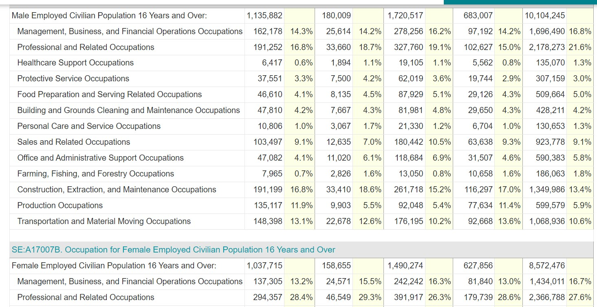

Using the American Community Survey (ACS) 2021 5-year estimate from Social Explorer, one can explore some interesting patterns about occupation for men and women in the US. Dataset here
Paring this dataset down and getting only the relevant information was a quite an undertaking. Re-downloading, sorting, renaming variables, transposing the rows/columns required plenty of effort to get something for analysis. I used several different datasets, one csv subset and one json subset
